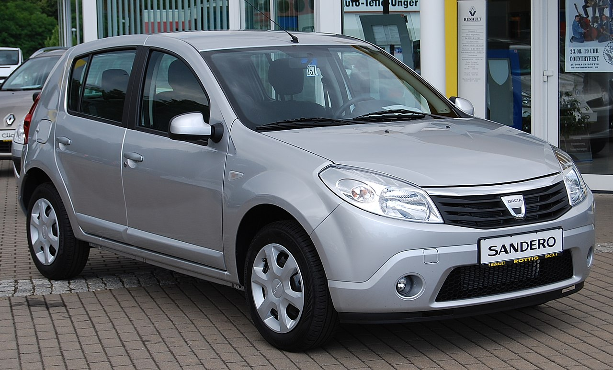
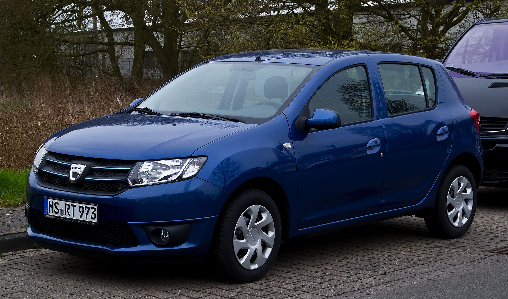

Dacia Sandero
Dacia Sandero este un autoturism de tip hatchback cu 5 uși, fabricat de uzina Dacia la Mioveni începând din octombrie 2007. Sandero a fost lansat oficial pe piața românească pe 3 iunie 2008, în cadrul unei ceremonii la World Trade Plaza la un preț care nu va depăși 9.500 de euro pentru cea mai echipată versiune, iar de-a lungul timpului s-a demarat comercializarea modelului în majoritatea țărilor europene. Sandero este și primul model care poartă noua siglă a companiei Dacia.
Prima generație
 Cu un ampatament ceva mai scurt decât sedanul din care derivă, Sandero a fost dezvoltat l a Technocentre Renault de lângă Paris, Franța, în colaborare cu centrele regionale de inginerie cu sediul în Brazilia și România. A fost dezvăluit pentru prima dată la Salonul Auto de la Frankfurt din 2007 și și-a făcut debutul oficial pe piață în Brazilia, ca model Renault, în decembrie 2007, fiind primul model Renault care a debutat în afara Europei.
A fost lansat ulterior în Europa ca model Dacia la Salonul Auto de la Geneva în martie 2008. Renault a început să producă Sandero în Africa de Sud în februarie 2009, iar în decembrie 2009, în Rusia. O versiune Renault este, de asemenea, produsă în Columbia pentru piața sa de origine și pentru export în țări, inclusiv Chile.
A doua generație
În România, noile Sandero și Sandero Stepway puteau fi comandate de la 1 octombrie 2012. A devenit disponibilă și în Marea Britanie, unde s-a alăturat lui Duster în reprezentanțe din 2013, fiind cea mai accesibilă mașină de pe piață.
 În iunie 2014, a fost lansat ca noul Renault Sandero în Brazilia, unde este fabricat și pentru piețele din America de Sud. Vânzările în Rusia au început în septembrie 2014, Sandero fiind asamblat local la uzina AvtoVAZ.
Sandero II este produs la Mioveni, România pentru piețe precum Marea Britanie, Irlanda,
Cipru și Africa de Sud (sub numele de Renault Sandero), este produs și în Algeria de Renault
Algeria de la începutul anului 2016 pentru piața locală (doar versiunea Stepway).
A treia generație
A treia generație de Dacia Sandero și Sandero Stepway a fost lansată împreună cu noua Dacia Logan III, pe 29 septembrie 2020. Mașina se bazează pe versiunea low-spec a platformei CMF-B și a fost prezentată pe 7 septembrie 2020.
 Noul Sandero este disponibil exclusiv cu motoare cu trei cilindri. Cel entry-level este un motor
aspirat natural de 1,0 litri cu 65 CP (66 CP; 48 kW) și un manual cu 5 trepte. Modelele de top
au primit un motor turbo de 1,0 litri cu 90 CP (91 CP; 67 kW) și posibilitatea de a alege între
o transmisie manuală cu 6 trepte sau CVT (transmisie continuu variabilă). Versiunea mai puternică a
motorului, denumită ECO-G 100 Bi-Fuel, a primit 100 CP (101 CP; 75 kW) și o transmisie manuală cu 6 trepte.
Noul Sandero este disponibil exclusiv cu motoare cu trei cilindri. Cel entry-level este un motor
aspirat natural de 1,0 litri cu 65 CP (66 CP; 48 kW) și un manual cu 5 trepte. Modelele de top
au primit un motor turbo de 1,0 litri cu 90 CP (91 CP; 67 kW) și posibilitatea de a alege între
o transmisie manuală cu 6 trepte sau CVT (transmisie continuu variabilă). Versiunea mai puternică a
motorului, denumită ECO-G 100 Bi-Fuel, a primit 100 CP (101 CP; 75 kW) și o transmisie manuală cu 6 trepte.
Mașinile cu specificații inferioare beneficiază de un sistem multimedia modular numit „Media Control” cu suport detașabil pentru smartphone, în timp ce ornamentele superioare au un ecran tactil integrat de 8 inchi cu suport pentru Android Auto și Apple CarPlay.
De asemenea, este echipat cu servodirecție electrică, faruri LED, asistență la frânare de urgență, avertizare unghi mort, asistență la parcare (cu senzori față și spate, cameră retrovizoare), asistență la pornirea în pantă, intrare fără cheie, scaune față încălzite, aer condiționat automat cu digital afisaj, camera de marsarier, frana de parcare electrica, stergatoare automate, deblocare la distanta a portbagajului si trapa electrica din sticla (dotare standard sau optională, in functie de piata).